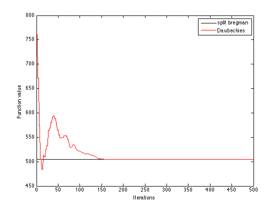

Contents
Generate data x
rng(1)
[l,h]=wfilters('db3');
B=[l;h];
N=2000;
[c,s]=wavedec(randn(N,1),1,'db3');
len=length(c);
t=sprand(1,len,0.2);
x=waverec(t,s,'db3');
if size(x,1)==1
x=x';
end
[l,h]=wfilters('db3');
DB=[l',h'];
Compute adaptive frames using Bregman iteration
rng(1)
r=6;m=2;eta=50;lambda=1000;
A=orth(randn(r)); A=A(:,1:m);
A=DB+randn(size(DB))*0.3;
A0=A;
Tol=1e-5;
maxiter=500;
tic
[A,E]=bregman_solve(x,A,eta,lambda,Tol,maxiter);
toc
figure(1)
plot(1:length(E),hamiltonian_l1(DB,x)*ones(1,length(E)),'k-'); hold on;
plot(1:length(E),E,'r-','linewidth',1);hold on;
legend('split bregman','Daubechies')
ylabel('Function value')
xlabel('Iterations')
A
DB
Elapsed time is 0.807879 seconds.
A =
0.0352 -0.3327
-0.0854 0.8069
-0.1350 -0.4599
0.4599 -0.1350
0.8069 0.0854
0.3327 0.0352
DB =
0.0352 -0.3327
-0.0854 0.8069
-0.1350 -0.4599
0.4599 -0.1350
0.8069 0.0854
0.3327 0.0352
